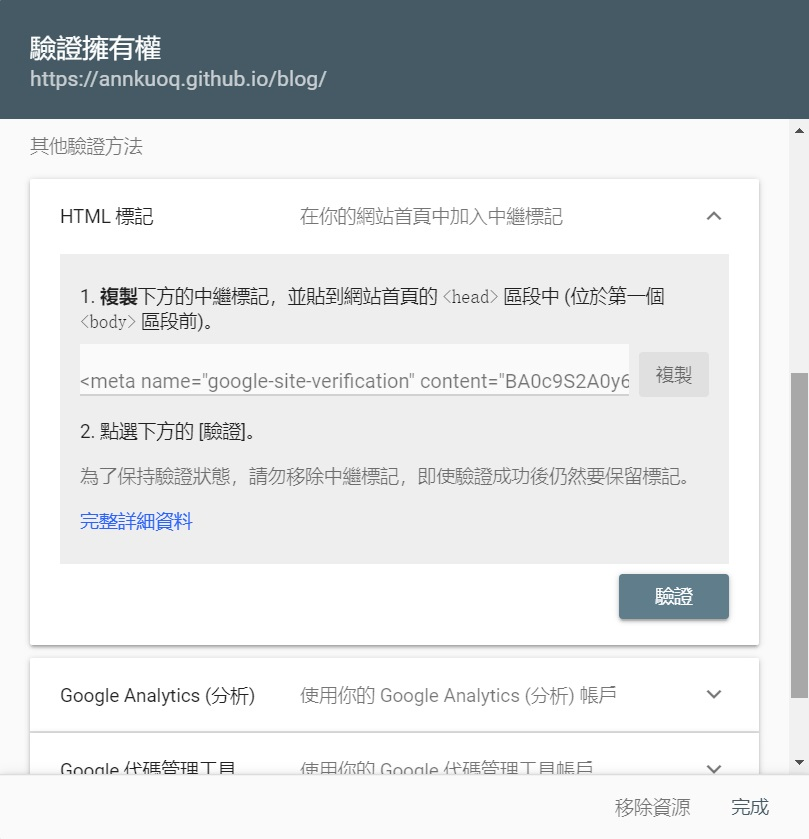
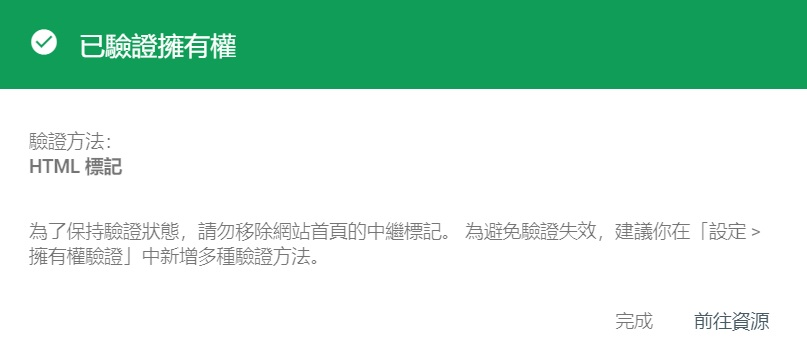

首先要先了解 Google 搜尋是怎麼運作的
其實 Google 不是搜尋整個網路
而是在搜尋 Google 的網頁索引 (index)
Google 搜尋的運作方式
有三個步驟:
- Crawling 抓取
- Indexing 建立索引
- Serving and Ranking 傳回搜尋結果和排名
1. Crawling 抓取
因為網頁沒有統一登錄的地方
所以 Google 會透過稱為 Crawlers 的自動化程式來抓取網路上的內容
再將這些網頁所含的資料傳回 Google 伺服器
2. Indexing 建立索引
Google 的系統在分析網頁的內容後 (文字、圖片、影片等)
就會將這些資料編目到 Google 索引中
就像書末索引一樣
Google 會為網頁中的每個字詞建立條目
3. Serving and Ranking 傳回搜尋結果和排名
因為搜尋結果太多了
所以 Gooogle 會用演算法排名
例如關鍵字出現頻率、或使用者所在位置、以前的搜尋紀錄等等
想更了解 Google 搜尋的運作方式 可點我
現在我們知道了 Google 其實是在搜尋 index
所以你有兩個選擇:
- 等 Google Crawlers 爬到你且建好索引的那一天
- 直接把網頁內容告訴 Google
看起來當然是直接告訴 Google 比較快～
使用 Search Console
Search Console 是 Google 的服務
我們把網站交給它之後
就可以搜尋到自己的部落格囉！
安裝步驟
登入 Google 並前往 Search Console >
立即開始選擇要新增的網站資源
網域: 必須進行 DNS 驗證網址前置字元: 支援多種驗證方式
因為我是用 GitHub Pages 架站，並沒有買網域，所以用 網址前置字元
接著輸入包含通訊協定和子網域的完整網址: https://annkuoq.github.io/blog/
- 驗證我擁有這個網站
Google 提供了多種驗證方法:- 上傳 HTML 檔案
- HTML 標記
- DNS 紀錄
- Google Analytics (分析) 追蹤程式碼
- Google 代碼管理工具容器片段
- Google 協作平台
- Blogger
- Google Domains
我是用 HTML 標記 的方式
把 <meta> tag 貼到 \themes\你的主題名稱\layout\_partia\head.ejs

- 儲存
.head.ejs - 清除快取和舊的靜態檔案
- 重新產生靜態檔案與部署網站
1
2
3$ hexo clean
$ hexo g
$ hexo d - 點擊
驗證鈕後就成功囉～

測試搜尋結果
過幾天後，搜尋 site:https://annkuoq.github.io/blog/
看見自己的網站出現太感人了 😭
Sitemap 網站地圖
除了給 Google 網址
也可以提供 Sitemap (網站地圖)
它會列出所有頁面 URL 和 metadata
讓搜尋引擎更有效的完整抓取網站
標準的 XML Sitemap 範例:
1 | <?xml version="1.0" encoding="UTF-8"?> |
想了解上面那些 tag 的用意 可點我
如何產生 Sitemap
1. 線上產生器
網路上有很多免費 Sitemap 線上產生器
例如 XML-Sitemaps
- 在根目錄的
_config.yml加上設定1
2sitemap:
path: sitemap.xml - 清除快取和舊的靜態檔案
重新產生靜態檔案與部署網站1
2
3$ hexo clean
$ hexo g
$ hexo d - 到 XML-Sitemaps 輸入網址 >
START View Sitemap Details>Download Your XML Sitemap File- 把
sitemap.xml上傳到根目錄 (GitHub Repo)
2. 第三方套件
有一個叫 hexo-generator-sitemap 的套件
能讓你的 Sitemap 和靜態檔案同時產生
- 安裝套件
1
$ npm install hexo-generator-sitemap --save
- 在根目錄的
_config.yml加上設定1
2sitemap:
path: sitemap.xml - 清除快取和舊的靜態檔案
產生靜態檔案和 Sitemap
重新部署網站1
2
3$ hexo clean
$ hexo g
$ hexo d
提交 Sitemap
- 前往 Search Console 主控台
- 點擊左側欄位中的
Sitemap - 輸入
sitemap.xml - 點擊
提交
新增或修改網頁內容
如果之後有新增網頁或修改內容
可以重新提交 Sitemap
或請 Search Console 重新檢索
- 點擊左側的
網址審查 - 輸入網址
- 點擊
要求建立索引